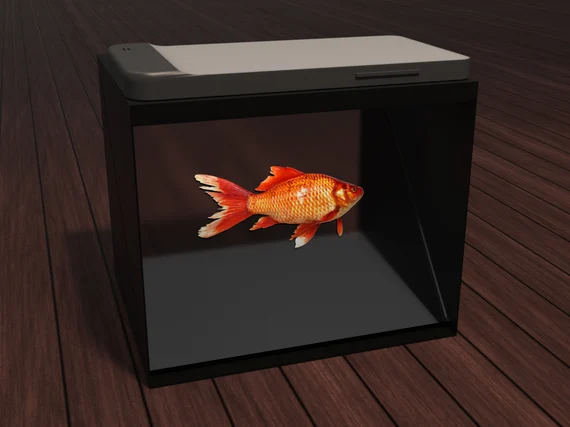

PROJEKT INFO
Dette projekt gik ud på at skabe en æstetiske audiovisual-design løsning i samarbejde med Odense Zoo, ved undervandsområdet.
Det skulle være en interaktiv løsning, der kunne engagere og underholde besøgende, samtidig med at det passede ind i det visuelle udtryk i området.
Løsningen var udviklet med fokus på brugeroplevelse, områdets udfordringer, designprincipper, farver og brandidentitet.
Det endelige resultat blev en 3D hologram box-prototype, som havde til formål at formidle viden om dyrene på en mere interaktiv og engagerende måde. Konceptet var designet til at kombinere visuelle hologrameffekter med lyd og fortællinger for at skabe en spændende oplevelse for de besøgende, særligt børnefamilier.
Analyserede virksomhedens behov og brugeradfærd inden for audiovisual design.
Genererede og udviklede idéen til audiovisual løsninger baseret på research og brugeradfærd.
Udviklede prototyper til audiovisual løsninger for at teste og validere idéen.
I dette projekt lærte jeg at arbejde mere bevidst med audiovisuelle interaktive løsninger.